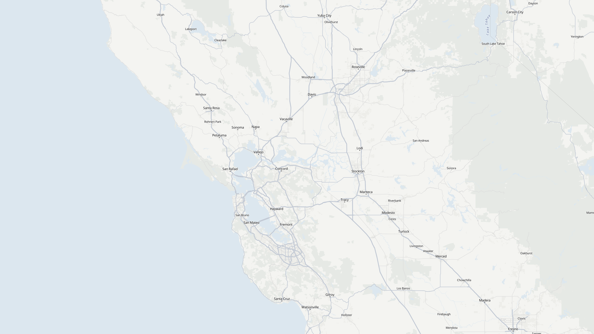

Map © OpenStreetMap contributors · OpenFreeMap
They asked for one. The network found three.
No consensus. Planning again without the held pair.
One stranger starts a chain of 5.
7 transplants
0 patient records shared